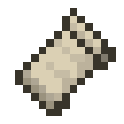
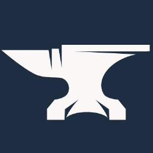
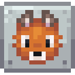
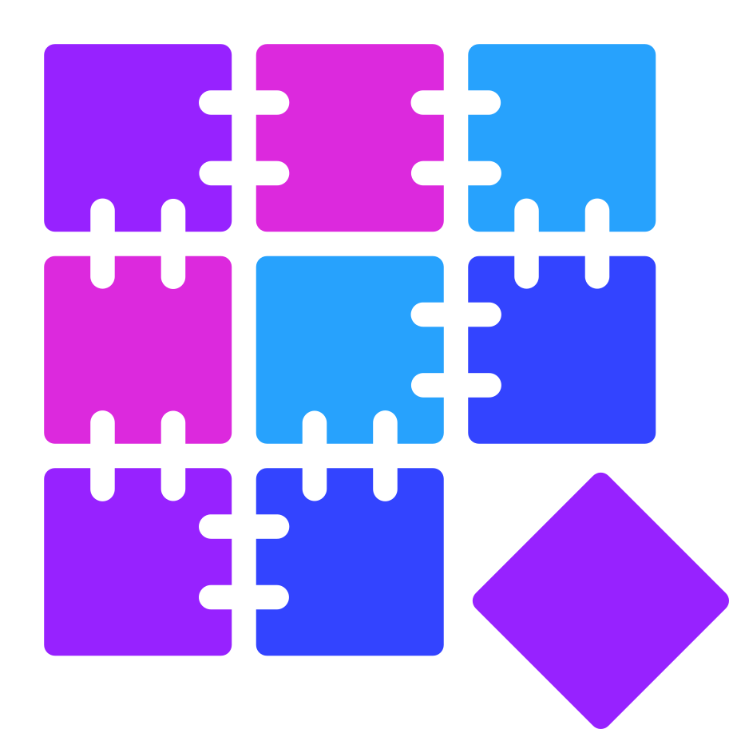

TTipCL
启动
实例库
下载
插件
设置
1111
安装 Minecraft 1.20.1
正式版实例名称
Fabric 1.20.1安装到 E:\.minecraft
模组加载器

不安装纯原版

Fabric0.16.10

Forge47.3.0

NeoForge47.1.106

Quilt0.27.1
Fabric 版本
0.16.10 · 推荐
Fabric API大多数 Fabric 模组都需要0.92.2
OptiFine与 Fabric 不兼容，可改装 Sodium + Iris
将安装 1.20.1 + Fabric 0.16.10 + Fabric API · 约 32 MB
开始安装